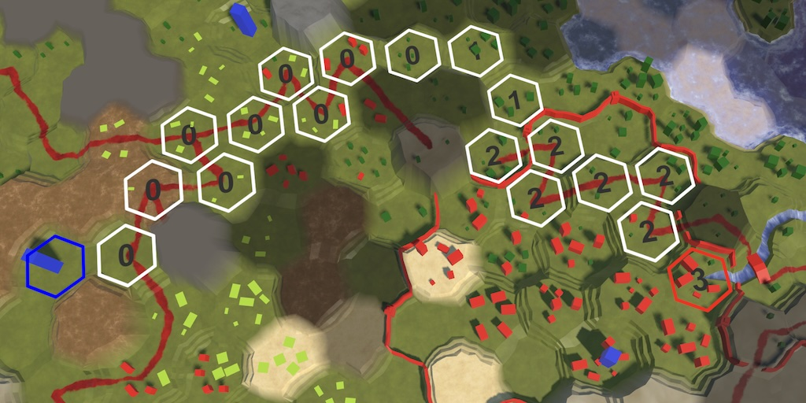

Hex Map 3.2.0
Separating Search Data

This tutorial is made with Unity 2022.3.20f1 and follows Hex Map 3.1.0.
Cell Search Data
We have already significantly reduces the size of HexCell in the previous two tutorials, but it still contains a lot of data that doesn't directly relate to its current state. This time we will extract all data from it that is only used by our searching algorithm.
Our search algorithm is A* for pathfinding, with slight tweaks for map generation and visibility determination. We use a priority queue with an implementation based on a bucket list, specifically a LIFO stack list as that produces the best paths for a hex grid. The stacks are implemented as linked lists.
Search Data Struct
The search data consists of six pieces of data, all currently stored in HexCell. We create a new HexCellSearchData struct to store them instead. While we could compact these values like we did for the other cell data, we'll keep it simple and define them as separate public fields. Further optimization could be done in the future. The struct has to be serializable so it can survive hot reloads.
The search data consists of a distance, a reference to the next cell with the same priority, a reference to the cell where the path comes from, a search heuristic, and a search phase. The idea is that at some point we'll no longer use game objects for cells, so we're going to use cell indices instead of object references. Thus all fields are integers. There's also a property to get the search priority, being the sum of distance and heuristic.
[System.Serializable]
public struct HexCellSearchData
{
public int distance;
public int nextWithSamePriority;
public int pathFrom;
public int heuristic;
public int searchPhase;
public readonly int SearchPriority => distance + heuristic;
}
Instead of storing the search data per cell we will store it in an array in HexGrid, alongside the cells array.
HexCellSearchData[] searchData;
…
void CreateCells()
{
cells = new HexCell[CellCountZ * CellCountX];
searchData = new HexCellSearchData[cells.Length];
…
}
Paths
The GetPath method has always returned a list of cell indices. Now we can change it so it won't access cells at all, only working with the search data.
public List<int> GetPath()
{
…
List<int> path = ListPool<int>.Get();
for (int i = currentPathToIndex;
i != currentpathFrom;
i = searchData[i].pathFrom)
{
path.Add(i);
}
…
}
The ClearPath and ShowPath methods still need to access the cells themselves to change their visualization, but should now use the new distance and path data.
public void ClearPath()
{
…
current.SetLabel(null);
current.DisableHighlight();
current = cells[searchData[current.Index].pathFrom];
…
}
void ShowPath(int speed)
{
…
int turn = (searchData[current.Index].distance - 1) / speed;
current.SetLabel(turn.ToString());
current.EnableHighlight(Color.white);
current = cells[searchData[current.Index].pathFrom];
…
}
This breaks pathfinding for now, but it will resume working once we've fully refactored our search algorithm to work with the new data.
Priority Queue
The next step is to change HexCellPriorityQueue so it also solely works with indices instead of the cells themselves. This requires it to access the search data stored by HexGrid, so give it a field to reference the grid and a constructor method to initialize it.
readonly List<int> list = new(); readonly HexGrid grid; public HexCellPriorityQueue(HexGrid grid) => this.grid = grid;
To access the search data array add a public getter property for it to HexGrid.
public HexCellSearchData[] SearchData => searchData;
While we're changing HexCellPriorityQueue, let's also get rid of its count field, as it isn't really necessary if we change our dequeueing approach a bit.
//int count = 0;… public void Clear() {//count = 0;… }
Adjust Enqueue so it stores a cell index and uses the grid's search data. Use −1 to indicate an empty priority, replacing null.
public void Enqueue(int cellIndex)
{
//count += 1;
int priority = grid.SearchData[cellIndex].SearchPriority;
if (priority < minimum)
{
minimum = priority;
}
while (priority >= list.Count)
{
list.Add(-1);
}
grid.SearchData[cellIndex].nextWithSamePriority = list[priority];
list[priority] = cellIndex;
}
Adjust Dequeue to match, also refactoring it into TryDequeue with the cell index as an output parameter, returning whether an index was found.
public bool TryDequeue(out int cellIndex)
{
//count -= 1;
for (; minimum < list.Count; minimum++)
{
cellIndex = list[minimum];
if (cellIndex >= 0)
{
list[minimum] = grid.SearchData[cellIndex].nextWithSamePriority;
return true;
}
}
cellIndex = -1;
return false;
}
Give Change the same treatment, again replacing cell references with indices and using the grid's search data.
public void Change(int cellIndex, int oldPriority)
{
int current = list[oldPriority];
int next = grid.SearchData[current].nextWithSamePriority;
if (current == cellIndex)
{
list[oldPriority] = next;
}
else
{
while (next != cellIndex)
{
current = next;
next = grid.SearchData[current].nextWithSamePriority;
}
grid.SearchData[current].nextWithSamePriority =
grid.SearchData[cellIndex].nextWithSamePriority;
}
Enqueue(cellIndex);
}
These changes cause compilation fail until we've updated our search code to use the new approach, which we'll do next.
Searching
We begin with out main pathfinding method, HexGrid.Search. The first step is to pass the grid itself to the search frontier when creating it. Let's also simplify the code by always clearing the search frontier, even the first time when it gets created. Then we set the search data for the first cell, simplified by creating a new HexCellSearchData value. After that we enqueue the first index, not a reference to the cell itself.
int speed = unit.Speed; searchFrontierPhase += 2;//if (searchFrontier == null)//{searchFrontier ??= new HexCellPriorityQueue(this);//}//else//{searchFrontier.Clear();//}searchData[fromCell.Index] = new HexCellSearchData { searchPhase = searchFrontierPhase };//fromCell.Distance = 0;searchFrontier.Enqueue(fromCell.Index);
The A* search loop now continues as long as dequeueing succeeds, instead of checking the queue's count. We then retrieve the current cell, calculate its distance once, and increment its search phase, using the new search data.
while (searchFrontier.TryDequeue(out int currentIndex))
{
HexCell current = cells[currentIndex];
int currentDistance = searchData[currentIndex].distance;
searchData[currentIndex].searchPhase += 1;
if (current == toCell)
{
return true;
}
int currentTurn = (currentDistance - 1) / speed;
…
}
When looping through a cell's neighbors, we have to delay checking the neighbor's search phase until after we can retrieve its data.
if (!current.TryGetNeighbor(d, out HexCell neighbor)/||//neighbor.SearchPhase > searchFrontier) { continue; } HexCellSearchData neighborData = searchData[neighbor.Index]; if (neighborData.searchPhase > searchFrontierPhase || !unit.IsValidDestination(neighbor)) { continue; }
The rest of the code still does the same, except that it should now work with indices and the grid's search data.
int distance = currentDistance + moveCost;
int turn = (distance - 1) / speed;
if (turn > currentTurn)
{
distance = turn * speed + moveCost;
}
if (neighborData.searchPhase < searchFrontierPhase)
{
searchData[neighbor.Index] = new HexCellSearchData
{
searchPhase = searchFrontierPhase,
distance = distance,
pathFrom = currentIndex,
heuristic = neighbor.Coordinates.DistanceTo(
toCell.Coordinates)
};
searchFrontier.Enqueue(neighbor.Index);
}
else if (distance < neighborData.distance)
{
//int oldPriority = neighbor.SearchPriority;
searchData[neighbor.Index].distance = distance;
searchData[neighbor.Index].pathFrom = currentIndex;
searchFrontier.Change(
neighbor.Index, neighborData.SearchPriority);
}
Generating Maps
We fix HexMapGenerator next. Pass the grid to the new queue in GenerateMap when creating its search frontier and switch to resetting the grid's search data.
public void GenerateMap(int x, int z, bool wrapping)
{
…
searchFrontier ??= new HexCellPriorityQueue(grid);
…
for (int i = 0; i < cellCount; i++)
{
grid.SearchData[i].searchPhase = 0;
}
Random.state = originalRandomState;
}
RaiseTerrain performs a simpler search variant to select a local group of cells to raise. We only have to set the search phase of the first cell, using the defaults for the other values.
searchFrontierPhase += 1;
HexCell firstCell = GetRandomCell(region);
grid.SearchData[firstCell.Index] = new HexCellSearchData
{
searchPhase = searchFrontierPhase
};
//firstCell.Distance = 0;
//firstCell.SearchHeuristic = 0;
searchFrontier.Enqueue(firstCell.Index);
Again, the search loop has to switch to the new dequeueing approach and work with the grid's search data.
while (size < chunkSize && searchFrontier.TryDequeue(out int index))
{
HexCell current = grid.GetCell(index);
…
for (HexDirection d = HexDirection.NE; d <= HexDirection.NW; d++)
{
if (current.TryGetNeighbor(d, out HexCell neighbor) &&
grid.SearchData[neighbor.Index].searchPhase <
searchFrontierPhase)
{
grid.SearchData[neighbor.Index] = new HexCellSearchData
{
searchPhase = searchFrontierPhase,
distance = neighbor.Coordinates.DistanceTo(center),
heuristic = Random.value < jitterProbability ? 1 : 0
};
searchFrontier.Enqueue(neighbor.Index);
}
}
}
Make the same changes to LowerTerrain. After that we've refactored the traditional search code, but our project still doesn't compile because we also perform a different type of search when determining visibility.
Cell Visibility
Cell visibility is determined by searching through the map. As we have moved the search data from cells to the grid let's move the cell visibility data there as well. This makes sense because whether a cell is currently visible doesn't just depend on the cell itself but also on units, and the grid manages both.
Visibility via Grid
Add an integer array field to HexGrid to track cell visibility.
int[] cellVisibility;
…
void CreateCells()
{
cells = new HexCell[CellCountZ * CellCountX];
searchData = new HexCellSearchData[cells.Length];
cellVisibility = new int[cells.Length];
…
}
Also add a public method to check whether a cell is visible, given its index. Currently cells have the IsVisible property that also checks whether they're explorable, but this isn't necessary so we'll no longer include that check here.
public bool IsCellVisible(int cellIndex) => cellVisibility[cellIndex] > 0;
Adjust HexCellShaderData.RefreshVisibility so it relies on the grid to check the cell's visibility.
cellTextureData[index].r = Grid.IsCellVisible(cell.Index) ? (byte)255 : (byte)0;
Do the same for HexCellShaderData.UpdateCellData.
if (Grid.IsCellVisible(cell.Index))
{
if (data.r < 255)
{
…
}
}
Changing Visibility
Changing the cell visibility now becomes the sole responsibility of HexGrid. However, when a cell becomes visible for the first time they should be marked as explored. Introduce a public HexCell.MarkAsExplored method to make this possible.
public void MarkAsExplored() => flags = flags.With(HexFlags.Explored);
Now adjust HexGrid.IncreaseVisibility so it does the work HexCell.IncreaseVisibility used to do. Increment the visibility of all found cells, marking and refreshing them if their visibility increased to 1.
public void IncreaseVisibility(HexCell fromCell, int range)
{
List<HexCell> cells = GetVisibleCells(fromCell, range);
for (int i = 0; i < cells.Count; i++)
{
//cells[i].IncreaseVisibility();
if (++cellVisibility[cells[i].Index] == 1)
{
cells[i].MarkAsExplored();
cellShaderData.RefreshVisibility(cells[i]);
}
}
ListPool<HexCell>.Add(cells);
}
Adjust DecreaseVisibility and ResetVisibility in the same way.
public void DecreaseVisibility(HexCell fromCell, int range)
{
List<HexCell> cells = GetVisibleCells(fromCell, range);
for (int i = 0; i < cells.Count; i++)
{
//cells[i].DecreaseVisibility();
if (--cellVisibility[cells[i].Index] == 0)
{
cellShaderData.RefreshVisibility(cells[i]);
}
}
ListPool<HexCell>.Add(cells);
}
public void ResetVisibility()
{
for (int i = 0; i < cells.Length; i++)
{
//cells[i].ResetVisibility();
if (cellVisibility[i] > 0)
{
cellVisibility[i] = 0;
cellShaderData.RefreshVisibility(cells[i]);
}
}
…
}
The last method that we have to change is GetVisibleCells. Adjust its beginning like for the other search methods. The only notable difference is that we should make sure that the path-from data is not accidentally cleared, because it might be needed to clear the current path. So we'll simply copy the existing value. Not doing so could cause ClearPath to fail, possibly getting stuck in an infinite loop.
searchFrontierPhase += 2;//if (searchFrontier == null)//{searchFrontier ??= new HexCellPriorityQueue(this);//}//else//{searchFrontier.Clear();//}range += fromCell.ViewElevation; searchData[fromCell.Index] = new HexCellSearchData { searchPhase = searchFrontierPhase, pathFrom = searchData[fromCell.Index].pathFrom };//fromCell.Distance = 0;searchFrontier.Enqueue(fromCell.Index);
Change its search loop, as before.
while (searchFrontier.TryDequeue(out int currentIndex))
{
HexCell current = cells[currentIndex];
searchData[currentIndex].searchPhase += 1;
visibleCells.Add(current);
…
}
And adapt the neighbor loop to work with the search data. Again we have to make sure that we do not change the path-from data.
for (HexDirection d = HexDirection.NE; d <= HexDirection.NW; d++)
{
if (!current.TryGetNeighbor(d, out HexCell neighbor)) //||
{
continue;
}
HexCellSearchData neighborData = searchData[neighbor.Index];
if (neighborData.searchPhase > searchFrontierPhase ||
!neighbor.Explorable)
{
continue;
}
int distance = searchData[currentIndex].distance + 1;
if (distance + neighbor.ViewElevation > range ||
distance > fromCoordinates.DistanceTo(neighbor.Coordinates))
{
continue;
}
if (neighborData.searchPhase < searchFrontierPhase)
{
searchData[neighbor.Index] = new HexCellSearchData
{
searchPhase = searchFrontierPhase,
distance = distance,
pathFrom = neighborData.pathFrom
};
//neighbor.heuristic = 0;
searchFrontier.Enqueue(neighbor.Index);
}
else if (distance < searchData[neighbor.Index].distance)
{
//int oldPriority = neighbor.SearchPriority;
searchData[neighbor.Index].distance = distance;
searchFrontier.Change(
neighbor.Index, neighborData.SearchPriority);
}
}
Cleanup
At this point our project should compile again and function as before, but now with search data and visibility separated from the cells. This allows us to delete quite a bit of code from HexCell. The IsVisible, Distance, PathFromIndex, SearchHeuristic, SearchPriority, SearchPhase, and NextWithSamePriority properties can be removed. So can the distance and visibility fields. And finally the IncreaseVisibility, DecreaseVisibility, and ResetVisibility methods.
The next tutorial is Hex Map 3.3.0.